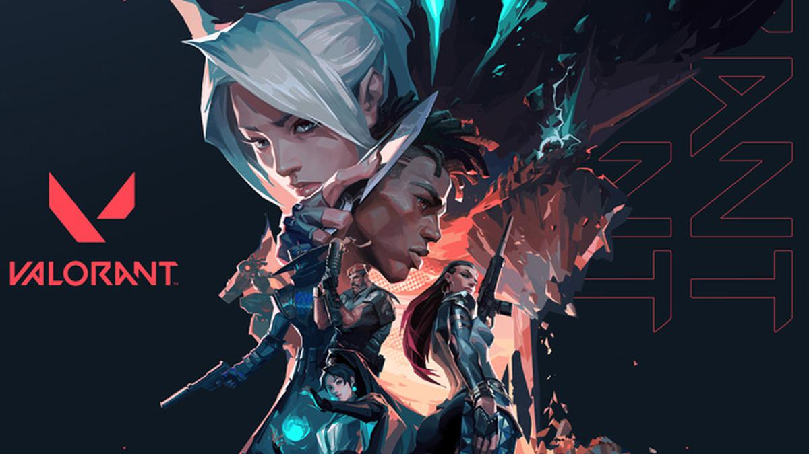
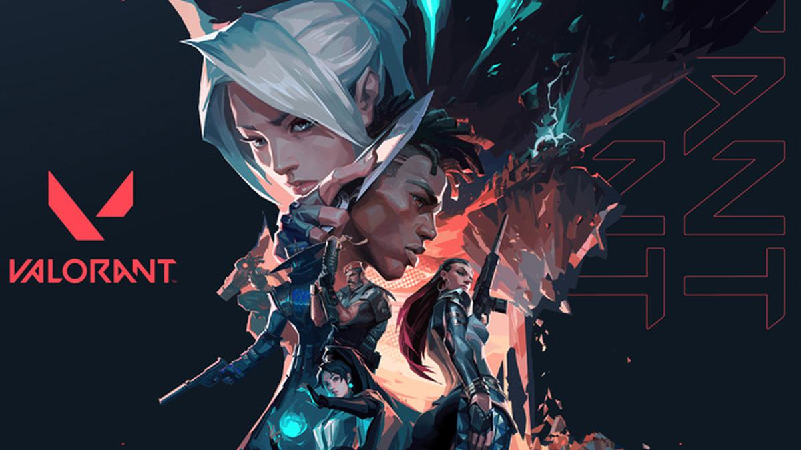

VALORANT
Videojuegos
 

Valorant es un videojuego multijugador de disparos tácticos en primera persona gratuito desarrollado y publicado por Riot Games. Se anunció el 15 de octubre de 2019 con el nombre en clave "Proyecto A", hasta que se reveló oficialmente como Valorant el 2 de marzo de 2020. Su lanzamiento oficial en la mayoría de las regiones a nivel mundial se produjo el 2 de junio de 2020 para Microsoft Windows y macOS.
Historia
Valorant tiene lugar en una versión de la Tierra en un futuro próximo después de un evento conocido como Primera Luz. Este evento abarca todo el mundo, lo que lleva a grandes transformaciones en la vida, la tecnología y la forma en que operan los gobiernos. Sin embargo, personas selectas en todo el mundo comienzan a ganar habilidades derivadas de este evento masivo. Estos individuos dotados se llaman Radiantes.
En respuesta a First Light, una organización en la sombra funda el Protocolo VALORANT, que reúne a agentes de todo el mundo. Estos Agentes consisten en Radiantes y otras personas equipadas con tecnología Radiant. Debido a las historias de fondo de estos personajes, el equipo de VALORANT presenta dinámicas interesantes, ya que los individuos no solo a veces se conocen entre sí, sino que también provienen de un amplio espectro de antecedentes que van desde el crimen hasta el ejército.
Jugabilidad
Valorant es un shooter táctico competitivo desde la perspectiva de primera persona. Tiene lugar en una Tierra del futuro cercano y presenta un elenco de personajes conocidos como Agentes, cada uno de los cuales tiene su propio conjunto único de habilidades para crear oportunidades tácticas..
Agentes
Los Agentes están compuestos por individuos conocidos como Radiantes que tienen habilidades hipernaturales o que poseen tecnología Radiant. Cada uno tiene su propia Habilidad de Firma y una Habilidad máxima Utilizada para crear y permitir oportunidades tácticas. Actualmente VALORANT tiene un total de 19 Agentes:
- Brimstone
- Viper
- Omen
- Killjoy
- Cypher
- Sova
- Sage
- Phoenix
- Jett
- Reyna
- Raze
- Breach
- Skye
- Yoru
- Astra
- KAY/O
- Chamber
- Neon
- Fade
Armas
Los jugadores podrán seleccionar una variedad de armas diferentes, cada una con sus propios atributos para satisfacer estilos de juego y metas específicos, que dependerán de disparos precisos y de alto impacto. Se pueden comprar nuevas armas durante la Fase de Compra usando créditos. Están separados por dos categorías, armas secundarias y armas primarias, con diferentes clases de armas, que incluyen:
- Armas Cortas
- Subfusiles
- Rifles
- Escopetas
- Armas Pesadas
- Rifles de Francotirador
Mapas
Cada partida de VALORANT tiene lugar en un mapa. Los mapas tienen un área de aparición para cada equipo, barreras que restringen áreas accesibles durante la Fase de Comprar y sitios objetivos donde se planta la Spike.
- Breeze
- Icebox
- Fracture
- Split
- Haven
- Bind
- Haven
- Pearl
Todos los derechos reservados 2022